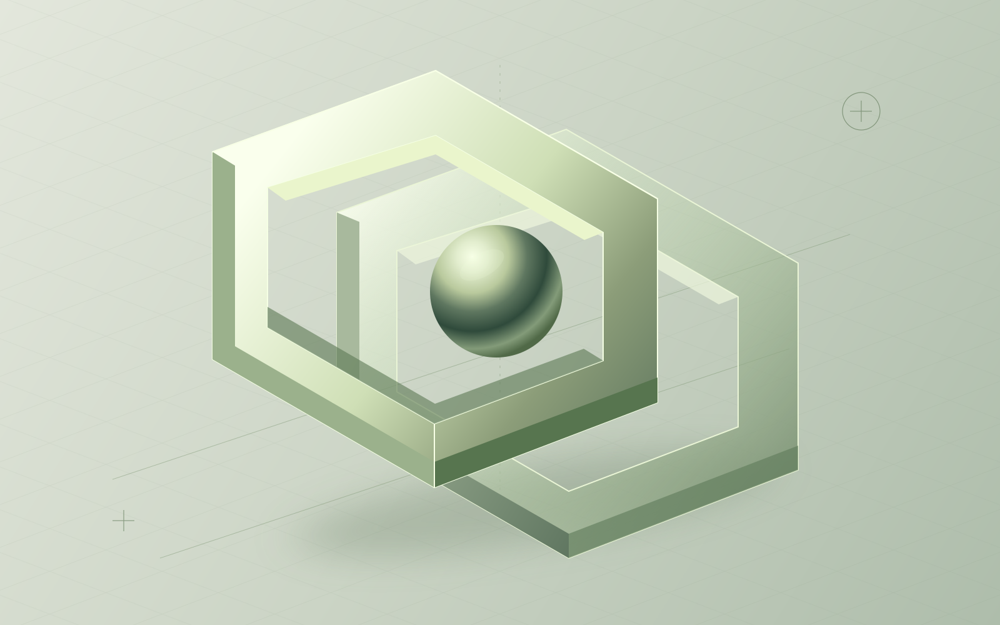
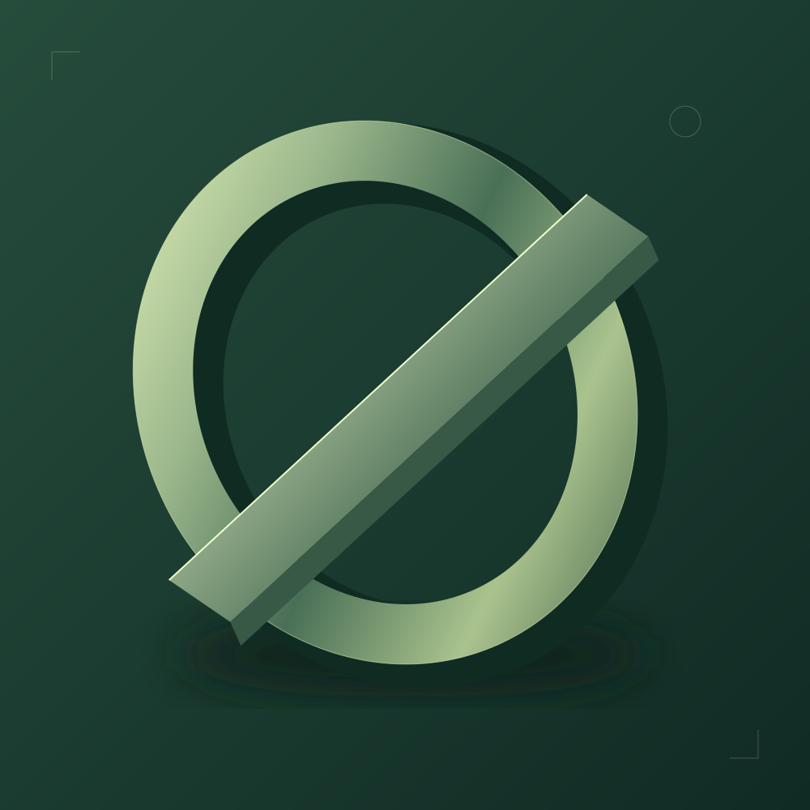
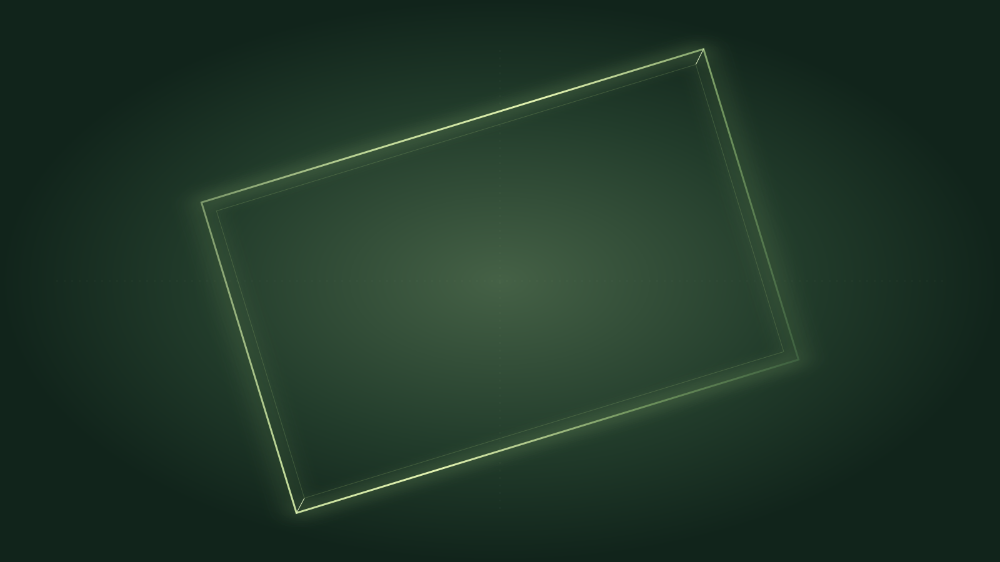

A NEW PERSPECTIVE
가능성은,
다른 차원에서.
생각과 현실 사이,
새로운 장면을 준비합니다.
DIGITALTWINMAX / 디지털트윈맥스CONCEPT & MOTION — IN PROGRESS

01 / CONCEPT
익숙한 시선 너머,
새로운 가능성.
아직 정해지지 않은 형태.
그 안에서 다음 이야기가 시작됩니다.

02 / MOTION
다음 장면으로.
움직임으로 전할 이야기.
이곳에서 만나게 됩니다.

A SCENE YET TO COME
새로운 장면을
준비하고 있습니다.
아직 공개된 영상이 없습니다. 위 이미지는 컨셉 포스터입니다.영상 내용 읽기
03 / EARLY ACCESS
체험판 안내.
첫 경험을 위한 공간.
공개되는 체험판을 이곳에서 만나보세요.
04 / STAY CURIOUS